Website Analysis and Improvements
Google Trend
- Joggesko: indicates high search interest in several Norwegian regions, suggesting a targeted marketing approach for these areas could be beneficial. The search term's popularity also shows seasonal peaks, which can inform promotional and stock planning strategies for a shoe store.
- NikeSko: The Google Trends data for "nike sko" indicates steady interest throughout the past year in Norway, with the highest regional interest in Rogaland, Hordaland, Aust-Agder, Møre og Romsdal, and Hedmark. This suggests that "nike sko" is a consistently popular search term, and these regions may be particularly lucrative markets for targeting Nike shoe promotions.
Lighthouse Ananlysis


- 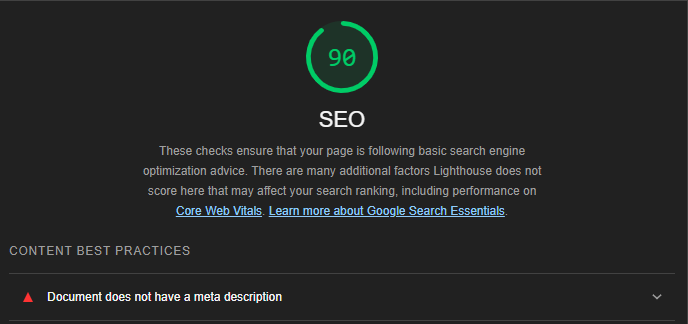
- Got only one recomendation from SEO analysis, which is to add a meta description to all the page.
- 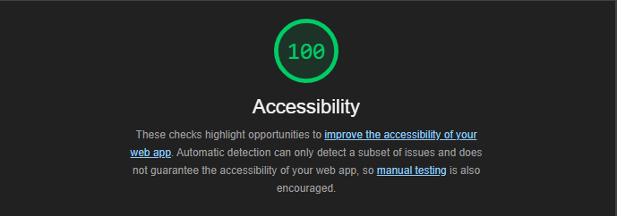
- In accessibility analysis got a perfect score of 100, did not get any recomendation for all the pages.
Wave Analysis

- 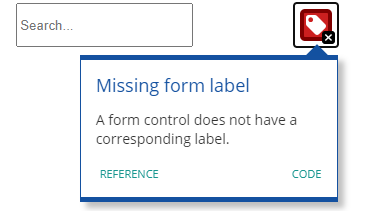
- Missing lable for search field
- 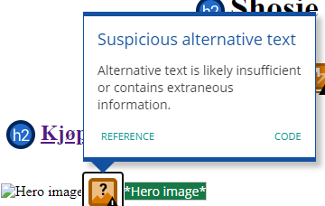
- Unclear alternative text
- 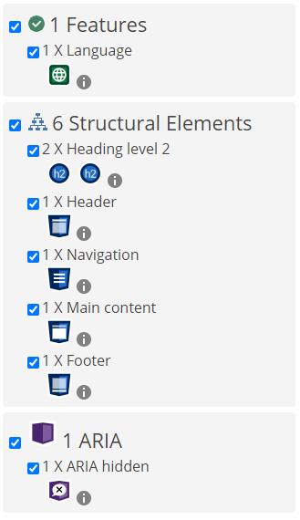
- Good use of semantic elements and, provided alternative text and aria-hidden attribute

- 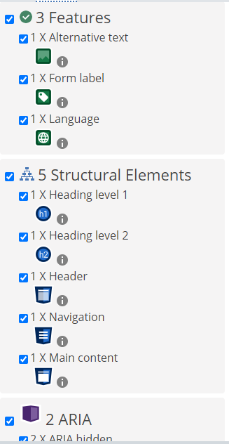
- Good use of semantic elements and, provided alternative text, labeling of elements and aria-hidden attribute

- 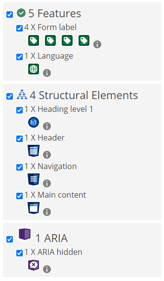
- Good use of semantic elements and, provided alternative text and aria-hidden attribute
ChatGPT Analysis
SEO Analysis
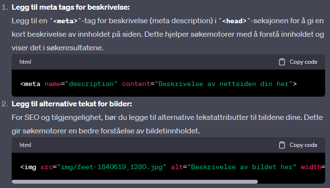Accessibility Analysis
Index
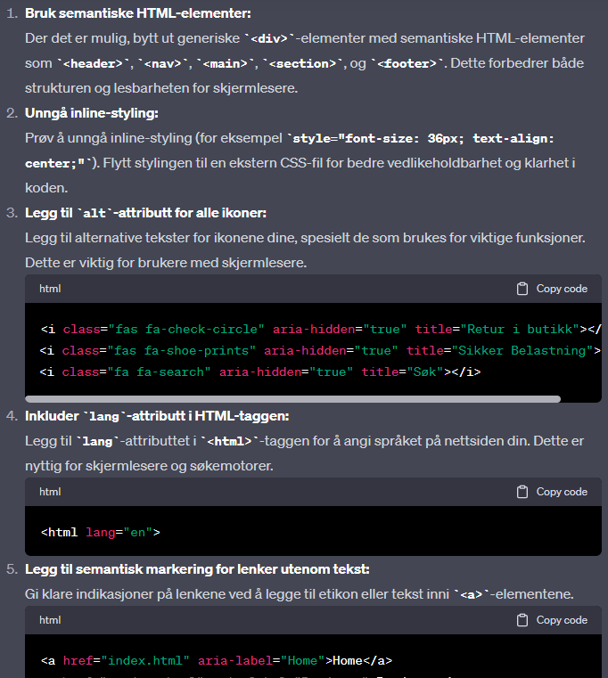Product
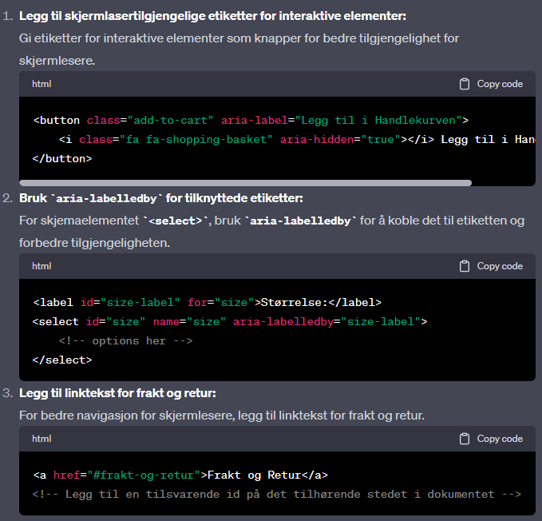Konto
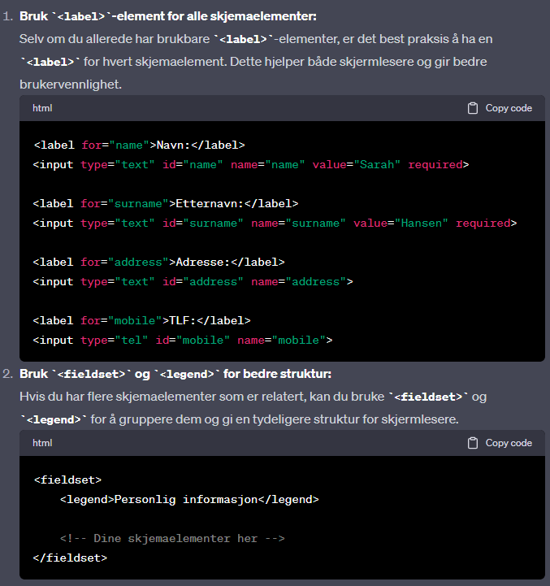Analysis Table
| Lighthouse | Wave | ChatGPT | |
|---|---|---|---|
| SEO |
|
|
|
| Accessibility |
|
|
|
Improvements
Index
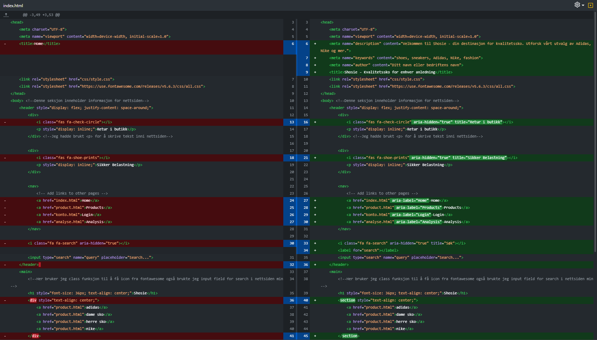Product
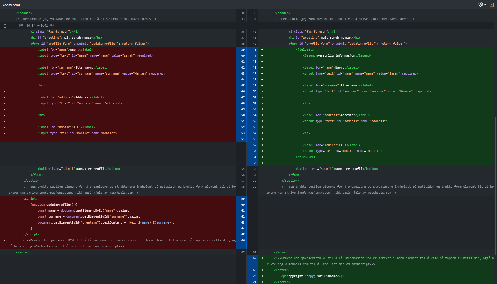Konto
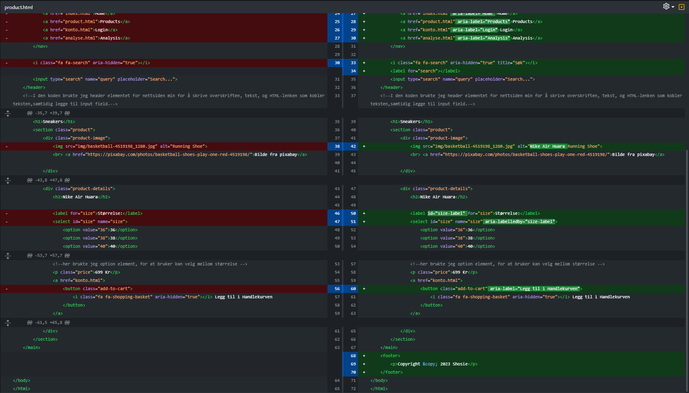List of Improvements
- Added meta description
- Added alternative text to the images and icons
- Added aria-hidden attribute to the icons
- Added title attribute to the icons
- Added aria-label to the search field
- Replaced divs with semantic elements
- Added aria-label to the links
- Added aria-labelledby to the select element
- Added fieldset and legend to the form
- Moved script to the bottom of the body
After Improvements Analysis
Lighthouse
Give 100/100 on both SEO ond Accessibility
Wave
No suggestions for improvements
ChatGPT
After implementing the suggestions from ChatGPT, it did not give any more suggestions for improvements
Website Availability
Screen Reader Compatibility
Evrerything is working as expected, the website reading was done by using the screen reader on my computer and the website was tested on different browsers and devices.
Keyboard Navigation
Keyboard navigation is working as expected
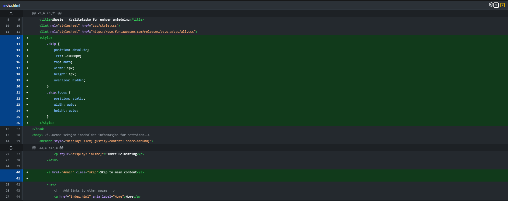Added skip navigation link in header
ARIA Attributes
Added aria-label, aria-labelledby, aria-hidden and title attributes to the elements
Rich Results Test

Resultater fra google rich results